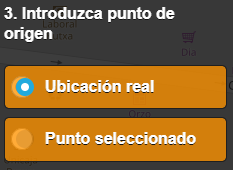
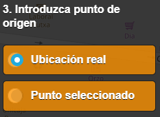

¿Qué es Starlight?
Esta aplicación permite localizar las mejores zonas para disfrutar del maravilloso mundo estelar. Dirigida a todas aquellas personas apasionadas
de la astronomía que tienen que esquivar la contaminación lumínica para poder disfrutar de su hobbie. Su funcionamiento consisitirá en que a partir de la localización del usuario se obtiene la zona más cercana con menor contaminación lumínica.
El usuario podrá seleccionar:
- Nivel de oscuridad
- Máxima distancia de desplazamiento
Equipo del proyecto
Este proyecto lo han realizado los siguientes alumnos de cuarto curso de Ingeniería de Tecnologías Específicas de Telecomunicación
Encargada del diseño y realización de la interfaz de la aplicación. Investigación de fuentes para la obtención de ráster con la información referente a la contaminación lumínica en Castilla y León.
Alicia Basulto
Ingeniero de Telecomunicación

Encargado de la programación de las peticiones y las funciones a realizar sobre las capas.
Diego Maurín
Ingeniero de Telecomunicación

Encargado de la unión de la interfaz con la lógica de la aplicación. Así como la realización de pruebas de funcionamiento sobre la aplicación y gestión de los errores.
Javier del Pozo
Ingeniero de Telecomunicación
Encargado de la fase en la que buscamos y gestionamos los datos que se van a utilizar.
Ignacio Royuela
Ingeniero de Telecomunicación
Objetivos
Para poder realizar esta aplicación, ha sido necesario hacer uso de diferentes tecnologías IDEs, protocolos y fuentes de datos.
- Tecnologías IDEs y Protocolos
Una de las bases más importantes para este proyecto ha sido la utilización de biblioteca de JavaScript denominada OpenLayers.
Gracias a ella, se ha podido ilustrar en el navegador web un mapa interactivo formado por diferentes capas. Por otro lado, el formato estándar denominado
GeoJSON, ha sido trascendental para procesar la información geográfica devuelta por las peticiones realizadas al servidor. Es importante
destacar el estándar OGC, ya que se ha hecho uso de los servicios WFS (Web Feature Service) y WPS (Web Processing Service). El servicio
WPS ha sido el pilar de la aplicación porque ha permitido realizar consultas al servidor alojado en Geoserver. Así mismo, el servicio WFS
ha sido empleado indirectamente en las consultas para capturar las fuentes de datos. Por último, hay que destacar el Servicio de Geoporcesamiento WPS denominado
Cartociudad ya que ha sido empleado para el cálculo de la ruta entre el punto de origen y el punto recomendado al usuario.
- Fuentes de datos
La primera fuente que ha sido empleada consiste en un shapefile con los Usos del suelo. Esta fuente de datos ha sido
obtenida del Centro de Descargas del CNIG (Centro Nacional de Información Geográfica). No obstante, se ha realizado un filtrado
para obtener solamente las zonas rurales que porporcionen una mejor visión estelar. Posteriormente, la capa ha sido reproyectada para su correcta
visualización, simplificada, importada a una base de datos PostgreSQL y por último cargada en Geoserver.
La segunda fuente consiste en una capa ráster con la Contaminación Lumínica. Esta fuente contiene la información referente
a la contaminación lumínica en España. Sin embargo, ha sido recortada solamente al territorio delimitado por Castilla y Léon para minimizar
su ocupación. Por último, la información se carga en el Geoserver.
Manual del usuario
En esta sección se procede a explicar cómo debe usarse esta aplicación para que el usuario obtengas los resultados correctamente.
- Primer Paso
Una vez que el usuario haya realizado una inspección a la página principal, es el momento de probar la aplicación. Para ello
debe pulsar el botón Empezar localizado en la parte superior de la página.

- Segundo Paso
El usuario ya está preparado para hacer uso de la aplicación, pero sería conveniente que antes diera permiso al navegador para que pueda
averiguar su ubicación. Una vez aceptado, el navegador podrá emplear la opción de Ubicación Real.
- Tercer Paso
A continuación se debe pulsar el botón de color naranja situado en la esquina superior izquierda con 3 líneas verticales. Una vez pulsado,
aparecerá un desplegable que tiene que rellenar el usuario según sus propósitos.
Inicialmente, tendrá que introducir un radio de cobertura en metros, es decir,
la máxima distancia que quiere desplazarse desde su ubicación actual o desde donde un punto cualquiera.
Posteriormente, tendrá que elegir el nivel
de oscuridad que desea, en este caso se le ofrece la posibilidad de escoger entre cuatro rangos distintos. Nota: El nivel 1 será la mínima
oscuridad y el nivel 4 será la máxima.
Por último, deberá elegir si prefiere escoger la ubicación actual en la que se encuentre o por el contrario prefiere elegir un punto cualquiera dando doble click en el mapa.
En el caso de seleccionar la segunda opción, aparecerá un telescopio indicando el punto de origen.

Una vez que el usuario ha rellenado todos los campos, debe pulsar el botón BUSCAR para que la aplicación comience a funcionar.
A continuación se le mostrará un cuadro que recoge todos los parámetros que ha introducido previamente y deberá pulsar Aceptar
Según se vayan haciendo los diferentes cálculos, el usuario será informado de los procesos realizados y podrá ver por pantalla las diferentes
capas que se van añadiendo hasta que finalmente se obtiene la ruta entre el punto de origen y el punto recomendado.
- Anotaciones
1) En caso de que suceda algún error, se le comunicará al usuario inmediatamente a través de una alerta.
2) El usuario podrá seleccionar las capas que desea visualizar (zonas oscuras, zonas recomendables...) pinchando en el icono situado en la parte inferior de la pantalla.
Una de las opciones que se permite es visualizar un Mapa Satélite o un Mapa de carreteras (por defecto).
3) El usuario podrá acceder al historial que contiene todas las búsquedas que haya realizado hasta ese momento.Para ello debe pulsar el
botón de información situado en la parte inferior de la pantalla.
4) El usuario podrá hacer zoom a su ubicación actual (siempre y cuando haya dado permisos al navegador)
pulsando el botón de localización situado en la parte inferior.

5) El usuario disponer de un buscador situado en la esquina superior derecha de la pantalla. En dicho
buscador podrá consultar la localización que quiera y el mapa automáticamente se centrará en dicha ubicación.
Una vez que el usuario haya realizado una inspección a la página principal, es el momento de probar la aplicación. Para ello
debe pulsar el botón Empezar localizado en la parte superior de la página.
El usuario ya está preparado para hacer uso de la aplicación, pero sería conveniente que antes diera permiso al navegador para que pueda
averiguar su ubicación. Una vez aceptado, el navegador podrá emplear la opción de Ubicación Real.
A continuación se debe pulsar el botón de color naranja situado en la esquina superior izquierda con 3 líneas verticales. Una vez pulsado,
aparecerá un desplegable que tiene que rellenar el usuario según sus propósitos.
Inicialmente, tendrá que introducir un radio de cobertura en metros, es decir,
la máxima distancia que quiere desplazarse desde su ubicación actual o desde donde un punto cualquiera.
Posteriormente, tendrá que elegir el nivel
de oscuridad que desea, en este caso se le ofrece la posibilidad de escoger entre cuatro rangos distintos. Nota: El nivel 1 será la mínima
oscuridad y el nivel 4 será la máxima.
Por último, deberá elegir si prefiere escoger la ubicación actual en la que se encuentre o por el contrario prefiere elegir un punto cualquiera dando doble click en el mapa.
En el caso de seleccionar la segunda opción, aparecerá un telescopio indicando el punto de origen.

Una vez que el usuario ha rellenado todos los campos, debe pulsar el botón BUSCAR para que la aplicación comience a funcionar.
A continuación se le mostrará un cuadro que recoge todos los parámetros que ha introducido previamente y deberá pulsar Aceptar
Según se vayan haciendo los diferentes cálculos, el usuario será informado de los procesos realizados y podrá ver por pantalla las diferentes
capas que se van añadiendo hasta que finalmente se obtiene la ruta entre el punto de origen y el punto recomendado.
1) En caso de que suceda algún error, se le comunicará al usuario inmediatamente a través de una alerta.
2) El usuario podrá seleccionar las capas que desea visualizar (zonas oscuras, zonas recomendables...) pinchando en el icono situado en la parte inferior de la pantalla.
Una de las opciones que se permite es visualizar un Mapa Satélite o un Mapa de carreteras (por defecto).
3) El usuario podrá acceder al historial que contiene todas las búsquedas que haya realizado hasta ese momento.Para ello debe pulsar el
botón de información situado en la parte inferior de la pantalla.
4) El usuario podrá hacer zoom a su ubicación actual (siempre y cuando haya dado permisos al navegador)
pulsando el botón de localización situado en la parte inferior.
5) El usuario disponer de un buscador situado en la esquina superior derecha de la pantalla. En dicho
buscador podrá consultar la localización que quiera y el mapa automáticamente se centrará en dicha ubicación.
Conclusiones y Líneas de mejora
- Motivación
La realización de este proyecto no solamente ha estado motivada por el hecho de superar los objetivos de la asignatura
Infraestructura de Datos Espaciales de 4º Curso del Grado Ingeniería de las Tecnologías Específicas de las Telecomunicaciones,
sino también por poder obtener una aplicación que nos facilitara llevar a práctica uno de nuestros hobbies favoritos,
ir a ver las estrellas. Además, somos conscientes de que la vida actual que nos ha impuesto la pandemia COVID-19 marcará nuestras actividades,
viajes y ritmo de vida. Esto ha hecho que nos hayamos involucrado y divertido con este proyecto ya que esperamos utilizarlo en un futuro
muy cercano. Ya que no podemos realizar viajes exóticos durante un tiempo, que mejor que tener una aplicación que nos facilite poder pasar
un buen rato con amigos y familiares para disfrutar del mundo estelar.
- Visión Futura
Desde un comienzo se pensó implementar esta aplicación a nivel de España, pero por temas de almacenamiento y tamaño de los ficheros, no se pudo.
Puesto que se dispone de un ráster con la contaminación lumínica de toda España y un mapa de los usos del suelo de todo el territorio español, se podría avanzar en esta aplicación.
No obstante, es necesario contar con los medios adecuados
para el almacenamiento y con un servidor relativamente más potente.
La realización de este proyecto no solamente ha estado motivada por el hecho de superar los objetivos de la asignatura
Infraestructura de Datos Espaciales de 4º Curso del Grado Ingeniería de las Tecnologías Específicas de las Telecomunicaciones,
sino también por poder obtener una aplicación que nos facilitara llevar a práctica uno de nuestros hobbies favoritos,
ir a ver las estrellas. Además, somos conscientes de que la vida actual que nos ha impuesto la pandemia COVID-19 marcará nuestras actividades,
viajes y ritmo de vida. Esto ha hecho que nos hayamos involucrado y divertido con este proyecto ya que esperamos utilizarlo en un futuro
muy cercano. Ya que no podemos realizar viajes exóticos durante un tiempo, que mejor que tener una aplicación que nos facilite poder pasar
un buen rato con amigos y familiares para disfrutar del mundo estelar.
Desde un comienzo se pensó implementar esta aplicación a nivel de España, pero por temas de almacenamiento y tamaño de los ficheros, no se pudo.
Puesto que se dispone de un ráster con la contaminación lumínica de toda España y un mapa de los usos del suelo de todo el territorio español, se podría avanzar en esta aplicación.
No obstante, es necesario contar con los medios adecuados
para el almacenamiento y con un servidor relativamente más potente.